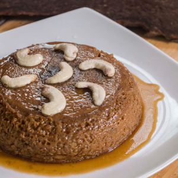
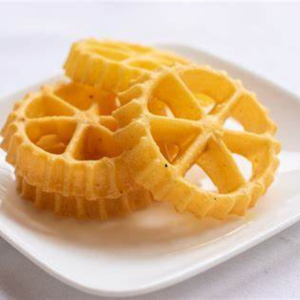

Watalappan
A traditional Sri Lankan dessert made with coconut milk, jaggery, and spices. Rich, creamy, and caramel-like, perfect for a delightful and indulgent treat.
Kokis
A crispy, deep-fried Sri Lankan snack made from rice flour and coconut milk, shaped into intricate designs. Perfect for festive occasions and tea time.
Kiri Toffee

A rich, creamy Sri Lankan confection made from condensed milk and sugar, with a hint of vanilla. Perfect for a sweet, melt-in-your-mouth treat.
Kalu Dodol

A traditional Sri Lankan sweet made from jaggery, coconut milk, and rice flour, with a chewy texture and rich, caramel-like flavor. Perfect for dessert.
Hot Chocolate

A rich and creamy beverage made with steamed milk and melted chocolate, topped with whipped cream. Perfect for a comforting and indulgent treat.
Smoothies

A refreshing blend of fresh fruits, yogurt, and juice, creating a thick, nutritious beverage. Ideal for a healthy and delicious pick-me-up.